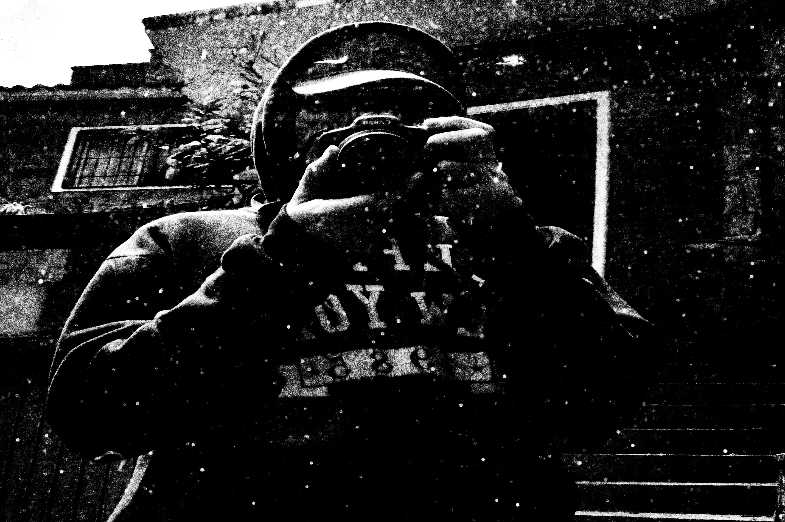
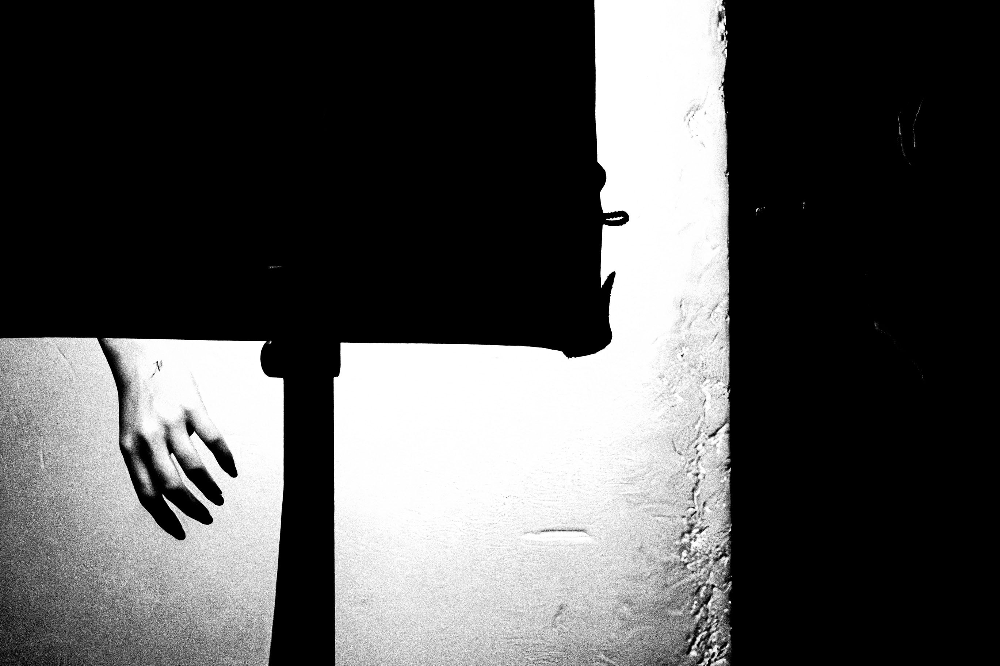
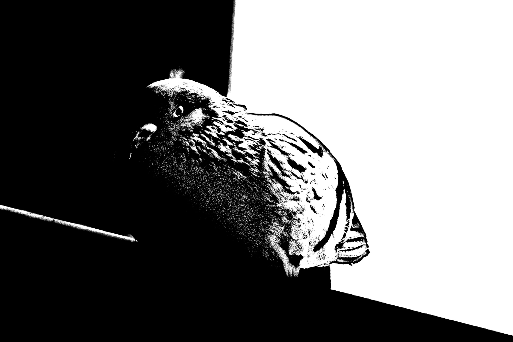
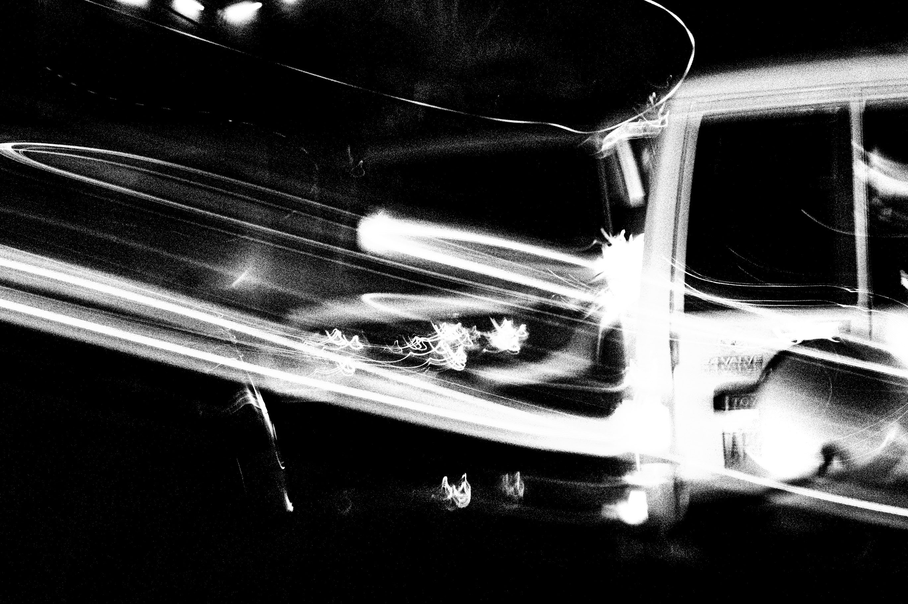
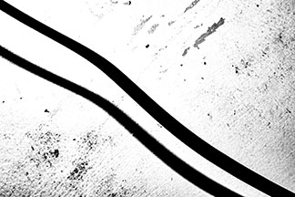
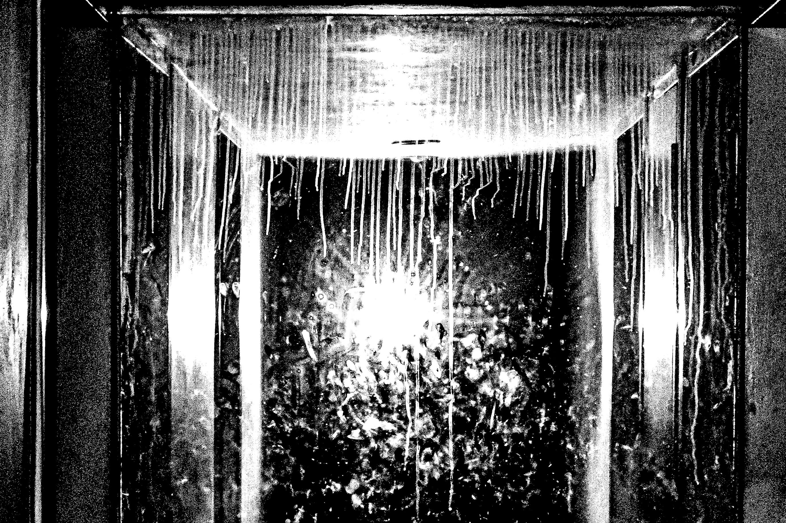
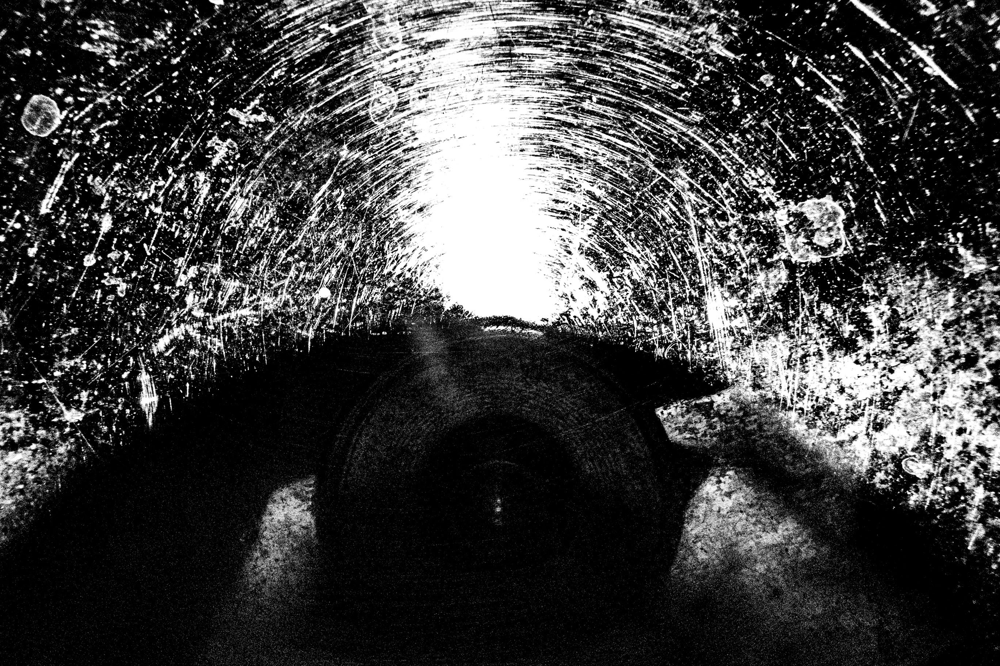
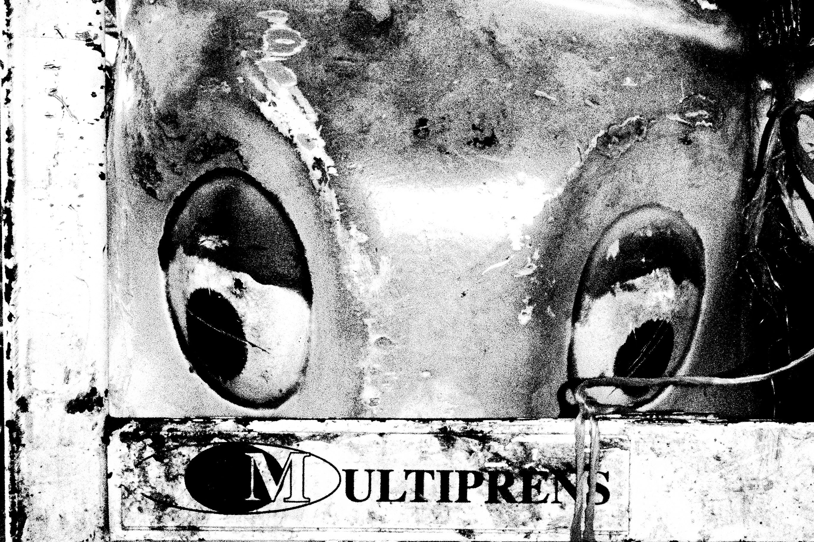

Caminando por ahí, 2025
Durante mucho tiempo, mi mundo se reducía a mi habitación, casi no salía, y cuando lo hacía, la urgencia por volver me ganaba. El encierro no era solo físico, sino mental: me había acostumbrado a la monotonía de lo seguro.
Descubrir la fotografía me brindó una perspectiva de la vida totalmente diferente, me impulsó a salir para conocer el mundo y, en el proceso, descubrirme a mí mismo. En el simple acto de caminar, me di cuenta de que hay vida vibrando en todas partes, pues todos, de una forma u otra, estamos conectados al lugar que habitamos.
He aprendido a mirar, a buscar belleza donde parece no haberla o donde la mayoría no puede, o no se atreve, a ver. Estas fotos son el resultado de ese despertar.
La cámara me enseñó que abrazar lo sucio, lo borroso y lo mundano es, en realidad, una forma de libertad. Hoy ya no estoy encerrado, ahora camino buscando grandeza en lo ordinario, convencido de que no hace falta vivir eventos extraordinarios para sentir que tienes una vida increíble.









